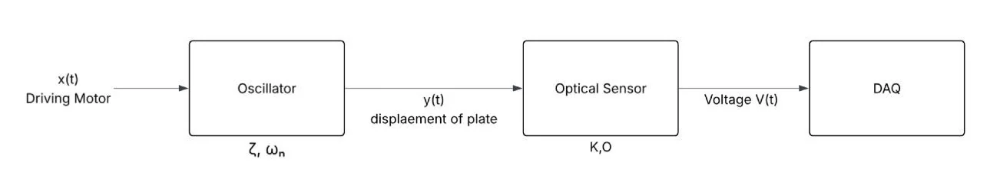
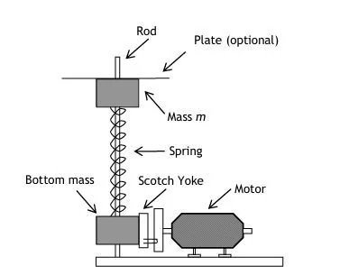
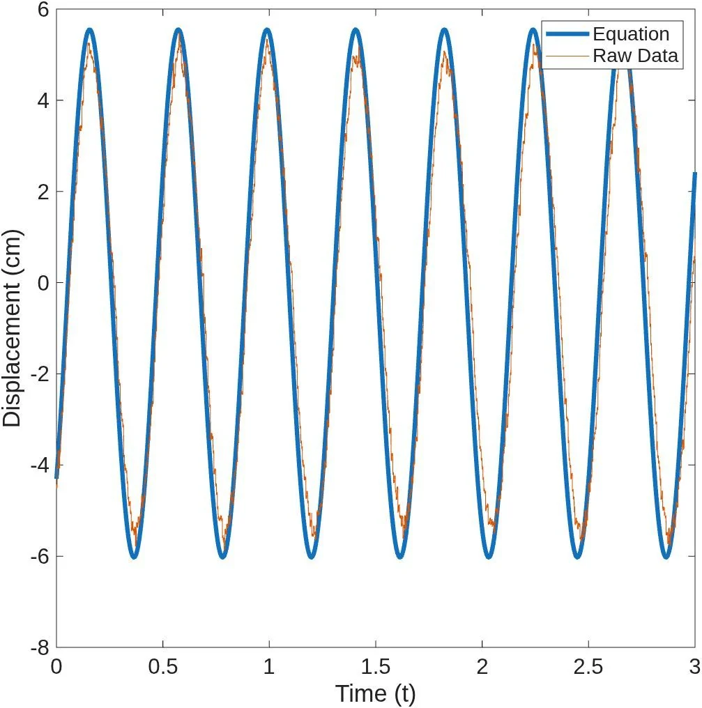
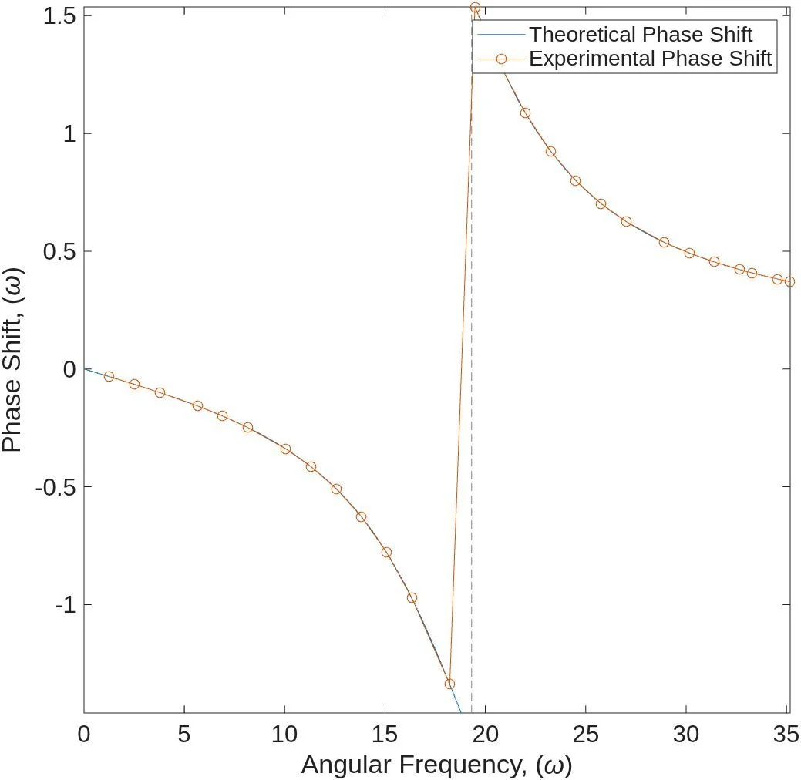
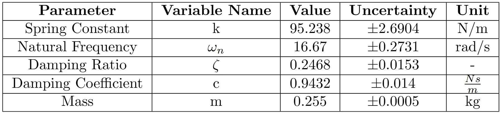

The Challenge
A driven spring-mass system requires displacement measurements across low-frequency, resonant, and high-frequency response regimes without mechanically loading the moving plate.
ME310 // INSTRUMENTATION & DYNAMICS // TEAM PROJECT
A transduction system for measuring the displacement response of a weakly nonlinear mechanical oscillator using a non-contact optical sensor, signal conditioning, and DAQ analysis.

PROJECT TYPE
Team laboratory projectCOURSE
ME310SYSTEM
Spring-mass oscillatorMEASUREMENT
Non-contact displacementSensor sensitivity
Sensor offset
Spring constant
Natural frequency
Damping ratio
Natural frequency uncertainty
01 // MEASUREMENT OBJECTIVE
A driven spring-mass system requires displacement measurements across low-frequency, resonant, and high-frequency response regimes without mechanically loading the moving plate.
The test chain paired an optical proximity sensor with a voltage-divider signal-conditioning circuit and DAQ input so reflected-light voltage could be calibrated into displacement data.
02 // TEST PROCESS
Applied incremental masses and measured plate displacement to determine spring constant.
Connected the optical sensor through a 10 V, 250 ohm conditioning circuit into DAQ acquisition.
Recorded step-response voltages at known displacement amplitudes to determine offset and sensitivity.
Ran sinusoidal trials across driving frequencies and captured voltage-derived motion response.
Used MATLAB analysis to evaluate natural frequency, damping, phase, and uncertainty.
03 // SYSTEM ARCHITECTURE



04 // RESULTS & ANALYSIS


05 // INTERPRETATION & LIMITATIONS
REPORTED OUTCOME
The presentation concludes that the optical sensor was consistent with distance measurement over the tested range and supported second-order response modeling.
METHOD VARIATION
The team reported damping ratios of 0.0957 from log decrement and 0.2468 from quality-factor analysis, making method selection an important interpretation point.
ERROR SOURCES
Documented limitations include neglected spring mass, mass-location effects, potential spring buckling, and possible calibration error.
SOURCE MATERIAL
Case-study text and figures were prepared from the submitted ME310 Final Presentation - Optical Proximity Sensor. Results shown here are reported team measurements and analyses from that presentation.